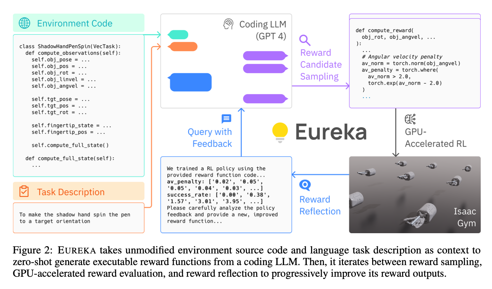
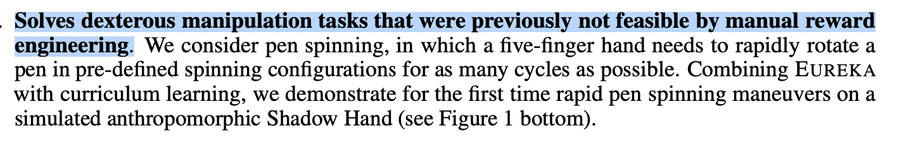
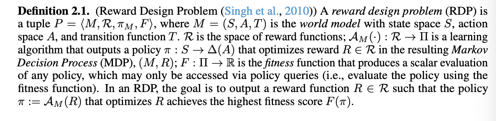
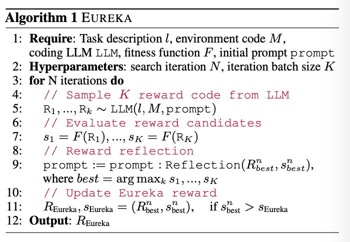
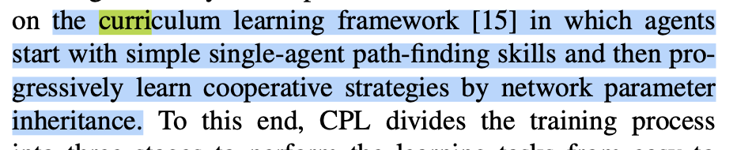
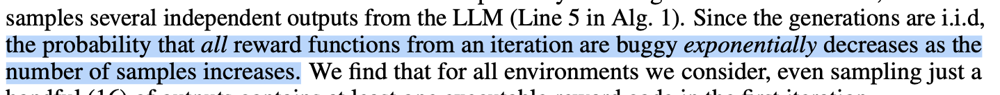
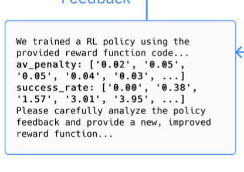
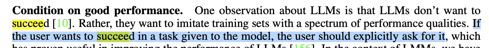
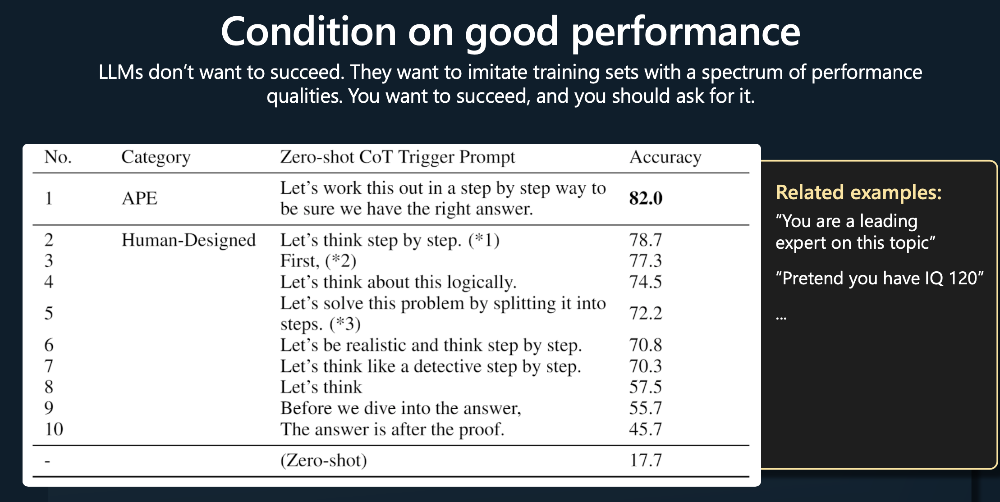
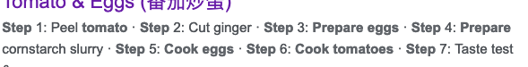

[TOC]
- Title: Eureka Human Level Reward Design via Coding Large Language Models 2023
- Author: Yecheng Jason Ma et. al.
- Publish Year: 19 Oct 2023
- Review Date: Fri, Oct 27, 2023
- url: https://arxiv.org/pdf/2310.12931.pdf
Summary of paper

Motivation
- harnessing LLMs to learn complex low-level manipulation tasks, remains an open problem.
- we bridge this fundamental gap by using LLMs to produce rewards that can be used to acquire conplex skill via reinforcement learning.
Contribution
- Eureka generate reward functions that outperform expert human-engineered rewards.
- the generality of Eureka also enables a new gradient-free in-context learning approach to reinforcement learning from human feedback (RLHF)

Some key terms
- given detailed environmental code and natural language description about the task, the LLMs can generate reward function candidate sampling.
- As many real-world RL tasks admit sparse rewards that are difficult for learning, reward shaping that provides incremental learning signals is necessary in practice
reward design problem


Curriculum learning

- the paper mentioned that they used curriculum learning to train the model.
- here are the key aspects of Curriculum learning:
- gradual complexity increase
- Curriculum learning starts by training models on easier or simpler tasks before gradually increasing the complexity of the tasks
- improved learning efficiency and generalisation
- Structured learning path
- the curriculum provides a structured learning path, allowing the model to build upon previously learned concepts
- implementation
- implementing curriculum learning may involve designing a curriculum, which is a sequence of tasks of increasing complexity
- relation to other concepts
- curriculum learning shares similarities with concepts like transfer learning and multi-task learning, but with a focus on the structured, gradual increase in task complexity.
- gradual complexity increase
Some insights for the practical implementation
How does the model ensure the (semantic) correctness of the reward function ?
- EUREKA requires the environment specification to provided to the LLM. they directly feeding the raw environment code as context.
- reason: the environment source code typically reveals what the environment semantically entails and which variables can and should be used to compose a reward function for the specified task
- they used evolutionary search to address the execution error and sub-optimality challenges.
- a very big assumption behind the success of this method

- evolutionary search, i.e., refine the reward in the next iteration based on the performance in the current iteration.
- simply specifying the mutation operator as a text prompt that suggests a few general ways to modify an existing reward code based on a textual summary of policy training
- textual summary of policy training : after the policy training, we evaluate the policy performance

- basically it is a loop to refine the reward function.
How does the model avoid the computer vision part ?
- they directly access the source code to obtain “processed” observations.
- https://github.com/eureka-research/Eureka/blob/main/eureka/envs/isaac/shadow_hand_obs.py
- some important parameters are explicitly stated (e.g., position, velocity, angle velocity)
- maybe we shall also do this to avoid multimodal and CV part.
Minor comments


Potential future work
-
having LLMs to generate reward function directly to train agents is something like replacing human experts with LLMs to design reward functions for learning agents.
-
The pipeline of this work is as follows:
- the human users gave the task descriptions
- -> the LLM convert the descriptions into a reward function
- -> the reward function helps to train the agent that can accomplish the task
- -> the human users can give further requirements in the next iteration
- -> the LLM will further adjust the reward function to fit the users’ need.
Hybrid model
Nir suggested that we can have a hybrid model such that conditions and effects expressed partially in predicate logic, and partially specified through imperative programming languages
-
I think the it really depends on the type of the tasks
- if the task is about planning or scheduling, e.g., Sudoku, then imperative programming has nothing to do with this
- if the task is about low-level controls that have no explicit discrete procedures, then defining a reward function (this work) is suitable
- if the task description explicitly contains the steps, then converting it to imperative programming language is suitable.
-
so it really depends on what is the task description is
- e.g., cooking task provided with steps info

-> imperative programming - e.g., “your task is to stack block A on top of B” -> predicate logic as conditions and effects
- e.g., cooking task provided with steps info
-
so the hybrid model is somehow like a big model containing multiple specialised models that handles various types of tasks.
Imperative programming version of the action definition
both reward function generation for actions or direct imperative function for actions can be used as auxiliary information to tune the PDDL action definition
Reward function example from GPT4
|
|
Imperative function example
|
|
- both reward and imperative action function contains state checking (i.e.,
is_on_ladderandis_moving_downetc. ) - the imperative programming version of the “climb_down_ladder” action contains a while loop that controls the agent to move towards the ladder before climbing down. This is different from the PDDL version action definition, where
is_on_ladderis the precondition of the action.